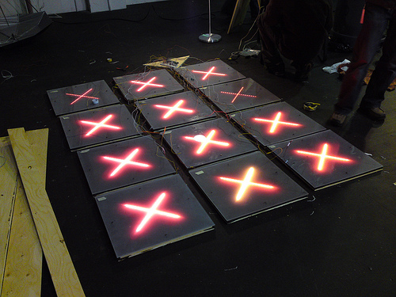
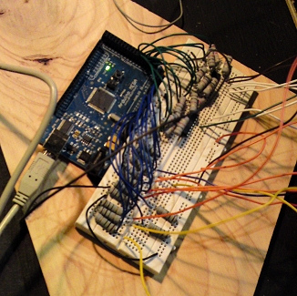

C.H.L.O.EAbout CHLOECHLOE: Collaborative Hallway Lit-Obstacle ExperimentCHLOE is the proposed installment for the CODE(Cultural Olympiad Digital Edition) Live event at the Center For Digital Media. It features an illuminated, pressure-sensitive flooring system built to allow passersby to continue to a common goal upon successful passage. CHLOE consists of a number of square pads placed across the width of a hallway. Whenever a person walks along the hallway and over CHLOE, a cumulative score projected on the hallway wall will be incremented. At any given time, some of the squares will be lit up with a LED (Light Emitting Diode). If someone steps on one of these lit squares, the score will be reset to zero. Also, the location of the lit squares will periodically change. Each square pad in CHLOE is equipped with two 12V LED strips and a pressure sensor. All these square pads are hooked up to a microcontroller embedded chip called 'Arduino Mega' which forms the brain of CHLOE. This whole setup is then connected to a computer using a USB cable which contains the logic of randomly lighting up of the square pads and updating the cumulative score using different animations in flash. The serial USB port is used to communicate back and forth between 'Arduino Mega' and Flash. Duration: 2 Weeks Team Size: 11 My Role & ResponsibilityAs a team member, I
Achievement
|
 CHLOE in Action  CHLOE in Action  CHLOE Circuit |